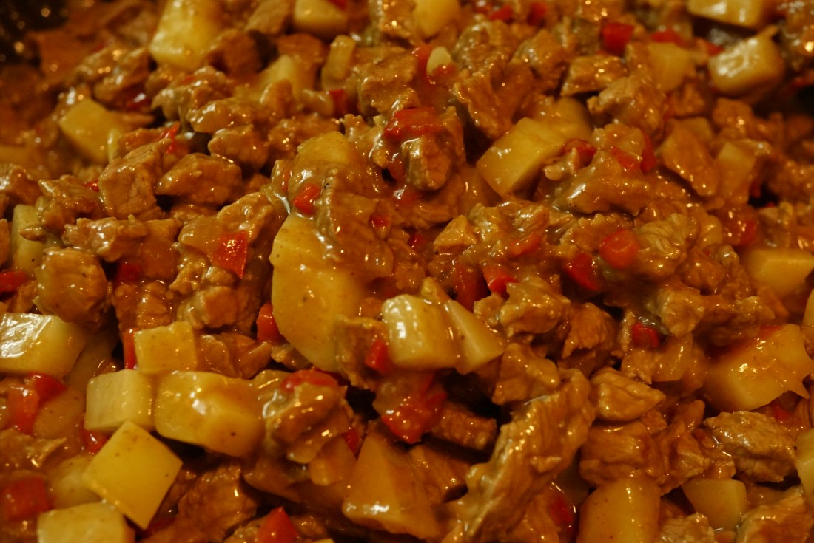

¡Las mejores empanadas de carne!
Casi siempre que hago empanadas en casa es un poco para salir del apuro… jamón y queso cortadito y listo… o choclo, jamón y salsa blanca… o sino de carne, pero muy simples, solamente salteando cebolla, carne, morrón y algo de maicena para unir.
Aclaro que siempre tienen éxito y no sobra nada, pero estas empanadas son otra cosa. Sin duda lleva un poco más de tiempo hacer este relleno, pero les prometo que vale la pena el esfuerzo!
La carne la corté «a cuchillo» y la verdad es que a mitad de camino casi me rindo y meto todo en la procesadora pero sabía que no iba a ser lo mismo así que seguí adelante!
Esa carne cortada a cuchillo hace toda la diferencia, ya que queda súper jugosa y tierna. Además, usé varias especias y unas papas en cubitos que me encantaron! Aclaro que soy enemiga de las aceitunas, por lo que no le puse, pero obvio que pueden hacerlo!
Tómense su tiempo para hacer estas empanadas deliciosas y disfrutarlas en familia!
Ingredientes
- 800 grs de carne (puede ser entrecote, bola de lomo, lomo o el corte que prefieran)
- 1 cebolla chica
- 1 morron rojo chico
- 1 diente de ajo
- 2 huevos duros
- 150 grs de queso fontina, rallado (o pueden usar cualquier otro que sea bien sabroso)
- 2 papas chicas
- 1 sobrecito de extracto de tomate
- 1/2 cucharadita de curry (o pueden usar comino si les gusta)
- 1/2 cucharadita de pimentón
- 1/2 cucharadita de ajo en polvo
- 1 cucharada de maicena
- Sal y pimienta a gusto
- 1 huevo para pintar
- 1 paquete de 24 masas para empanadas (usé las tipo caseras)
Procedimiento:
-
Cortar la carne en trocitos bien chicos (de aprox. 1/2 x 1/2
cm)
-
Colocar dentro de un bowl y agregar el pimentón, el curry, el
ajo en polvo y la maicena y mezclar bien. Reservar mientras
preparamos el resto.
-
Cortar la cebolla, el ajo y el morrón bien chiquitos
-
Cortar las papas en cubitos bien chiquitos y cocinarlas en el
micro por unos 3 – 4 minutos o hervirlas hasta que estén al
dente (no las pasen porque sino se van a deshacer en la mezcla
de carne!).
-
En una sartén u olla grande, calentar 1 cucharada de aceite de
oliva y saltear la cebolla junto con el ajo por unos minutos
hasta que quede transparente. Agregar el morrón y cocinar unos
minutos mas.
-
Con el fuego fuerte, agregar la carne y dorar unos minutos sin
revolver ni mezclar (dejarla quieta así no pierde líquido!).
Dar vuelta y cocinar unos minutos más sin tocar. Agregar sal y
pimienta.
Mezclar bien, Agregar el extracto de tomate y la papa en cubitos y dejar cocinando unos 10 minutos. La mezcla tiene que quedar bastante espesa y sin líquido. -
Pasar a un bowl y dejar enfriar.
Agregar el queso rallado y el huevo picado chiquito y mezclar. Corregir sal y pimienta si es necesario. -
Precalentar horno a 180°C.
Forrar una asadera o placa de horno con papel manteca o de lo contrario aceitar bien.
Armar las empanadas mojando el borde de la masa y rellenando con bastante relleno (nada peor que morder una empanada casi vacía!)
-
Doblar y unir bien los bordes. Hacer el repulgue y colocar
sobre la asadera.
-
Hornear por aprox 15 – 20 min o hasta que la masa esté
doradita.
Si te gustó esta receta, dejanos tu comentario.

Fernanda8:21pm, hace un mes
LAS VOY A PROBAR PORQUE SOY FANATICA DE LAS EMPANADAS DE CARNE. UNA PREGUNTA, ES NECESARIO Y HACE LA DIFERENCIA EL QUESO RALLADO? EN CUANTO AL TRABAJO DE CORTAR LA CARNE YO HE PROBADO CORTADA A CUCHILLO Y POR DIOS UN MUNDO DE DIFERENCIA. PERO EL QUESO ….. NO SE. AGRADEZCO TU RESPUESTA Y SALUDOS PARA TI Y LA GENTE QUE SIGUE TU BLOG.

Mariano2:32pm, Sabado 04 sep
Hola! Qué pinta tienen! Una duda, las papas son imprescindibles? Porque quería hacer y poner en el freezer, pero no sé si la papa quedará bien al congelar.

Pablo10:30am, lunes 05 sep
Ya las hice y quedaron riquísimas! Lo único que no le puse fue el ajo en polvo porque no encontré, solo había ajo en pedacitos. Pero gracias por la receta!.
Karina8:55pm, miercoles 08 sep
Hola! Pregunta: Puedo sustituir la carne de tu receta por carne picada? Gracias!.